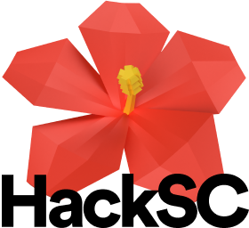

November 2017
Dear hackers,
Thank you so much for your interest in HackSC. We have good news and bad news for you.
Beginning with the bad news: over the course of more than a year, we ran into numerous roadblocks while trying to bring a large-scale hackathon back to USC. The largest of these problems was trying to secure a venue that could fit 1,000 hackers for the standard 36 hour weekend. Given the extreme space constraints in our highly concentrated campus, where thousands of USC organizations, athletic teams, research groups, and 3rd party organizations, are constantly negotiating for the same venues 365 days each year, this presented extraordinary challenges for us as we sought for a space that met the criteria for a large-scale hackathon.
But the good news is: we refused to give up. We are still extremely passionate about this project. We believe this hackathon will establish a strong precedent for our student body to strive to be creative entrepreneurs, to think like tech innovators, and to realize our future leadership in Southern California. We now have an official venue and date: April 13—15th, 2018 in the beautiful Galen Center. This detail will not change. Applications will open in February. The team is now running on full gears to bring you the best hacking experience, and we hope to see you there.
Thank you for believing in us,
The HackSC Team
P.S. If you are a company or foundation looking to sponsor HackSC, please reach out to us at team@hacksc.com